Xiaomi has yet again managed to send ripples throughout the Indian smartphone industry with the launch of the Redmi Note 7 and Redmi Note 7 Pro. The more feature-packed offering of the duo, the Redmi Note 7 Pro, packs some incredible hardware for its asking price, including a 48-megapixel rear camera, an octa-core Qualcomm Snapdragon 675 processor, and a large 4,000mAh battery, all encased in an attention-grabbing chassis. At its price, there is hardly any other smartphone in the market that can match the hardware prowess of the Redmi Note 7 Pro, at least on paper. Does that translate to a smartphone experience that can outshine offerings from other brands? Let's find out in our in-depth Redmi Note 7 Pro review.
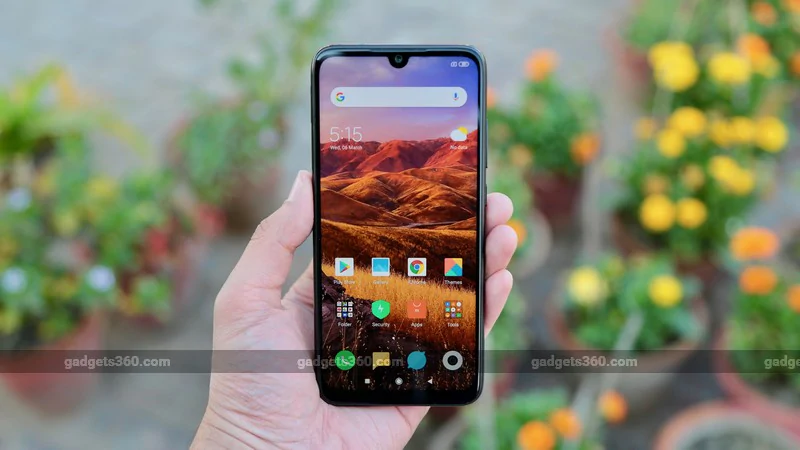
Redmi Note 7 Pro design
The Redmi series of budget smartphones has traditionally stuck with a generic design language that hardly stands out from the crowd, but the Redmi Note 7 ₹ 11,899 Pro marks a stark departure from that boring design philosophy. Xiaomi has opted for a more premium glass-sandwich design that looks stunning, while also making sure that the smartphone is durable. At first glance, the latest offering from the Redmi sub-brand looks much more expensive than it actually is, and that's certainly a good thing.
The Redmi Note 7 Pro has Gorilla Glass 5 on both sides, while a plastic rim runs around the edges. The glass rear panel is curved and blends seamlessly with the rim, which makes the device feel good in hands. We have the Space Black variant for review, and to describe it in one word, it looks gorgeous. We quite liked the reflective finish and the minimalist silver Redmi logo. The sides have a glossy coating of black paint, which creates an aesthetic uniformity with the shiny rear panel.
On the downside, the device attracts smudges and dust particles quickly, and they stand out against the black colour. Then there is the huge camera bump that is among the thickest we've seen on a smartphone recently. These are the two tradeoffs that users will have to live with unless they use a protective case. The Redmi Note 7 Pro also comes in Neptune Blue and Nebula Red options, both of which have metallic gradient designs.
Having Gorilla Glass 5 gives us some level of assurance that the device should withstand a few accidental drops without shattering. Xiaomi also states that the Redmi Note 7 Pro has reinforced corners to protect the screen from cracking.
In addition, the company says that the internals of the Redmi Note 7 Pro are protected from liquid damage to an extent, thanks to water-tight seals and the use of rubber insulation for the SIM tray, volume rocker, and power button. The company has used what it calls a P2i hydrophobic nano-coating, which is claimed to protect the smartphone against accidental liquid spills.
It is worth mentioning here that the Redmi Note 7 Pro can only handle minor liquid splashes; it is not water or dust resistant and does not have an IPxx rating. It would be best to refrain from dunking this smartphone under/ around water. Any damage caused by water exposure is not covered under the standard warranty.
The fingerprint sensor is located conveniently on the rear, but we found the volume buttons on the right a little too high to reach without adjusting the smartphone in our hands. Nonetheless, the power and volume buttons are “clicky” and provide satisfactory tactile feedback.
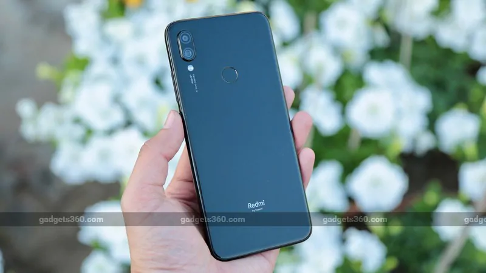
The left side has the hybrid dual-SIM (Nano+Nano) tray which can also take a microSD card of up to up to 256GB capacity in place of a second SIM. The 3.5mm headphone jack sits on the top. accompanied by an IR emitter, while the speaker and USB Type-C port are on the bottom.
Up front is the 6.3-inch full-HD+ (1080x2340 pixels) LTPS In-Cell display, which has a 19.5:9 aspect ratio and a pixel density of 409ppi. There is a small notch at the top, or a “Dot Notch” in Xiaomi's words.
The colour reproduction of the display is good, and so are the viewing angles. Content on the screen was sharp thanks to the high pixel count. However, we noticed that the display is quite reflective and we had to keep the brightness above the 90 percent mark to comfortably use the smartphone under direct sunlight. You can adjust the display's colour temperature and contrast if you like.
There is a reading mode that makes the screen's colour tone warmer so it's easier to read content. Aside from manually enabling or disabling it, users can choose to create a custom schedule to automate it.
At 159.21 x 75.21 x 8.1mm, the Xiaomi Redmi Note 7 Pro is not a small smartphone, and even though we liked its overall design and build quality, we did struggle when it came to reaching touch controls at the opposite extremes of the display.
Overall, the Redmi Note 7 Pro is one of the best-looking smartphones in its segment and also seems to be durable. The box contents include the smartphone, a clear protective case, a USB Type-C cable, a 10W charger, a SIM eject tool, and some paperwork.
Redmi Note 7 Pro specifications and software
Xiaomi has a penchant for packing powerful hardware into affordable devices. The Redmi Note 7 Pro is no exception, and raises the bar for the Chinese giant's “more for less” philosophy, with hardware that is usually found in devices priced significantly higher. The smartphone is powered by the octa-core Qualcomm Snapdragon 675 SoC paired with up to 6GB of RAM.
It comes in two configurations — 4GB of RAM with 64GB of storage, and 6GB of RAM with 128GB of storage. We have the higher-end variant for review, which is priced at Rs. 16,999.
The internal storage of the smartphone can be expanded by up to 256GB using a microSD card, but doing so would mean sacrificing the dual-SIM functionality. The phone features Widevine L1 certification, which means users can stream HD content from services including Amazon Prime Video and Netflix. Ports and connectivity options on the Redmi Note 7 Pro include a USB Type-C port and a 3.5mm headphone jack, plus an IR emitter, 4G LTE, dual-band Wi-Fi, and Bluetooth 5.
The Redmi Note 7 Pro runs MIUI 10 based on Android 9 Pie with the February security patch. To put it simply, MIUI is an acquired taste. People upgrading from a Xiaomi smartphone will feel right at home, but folks who prefer stock Android or have used any other skin, might find MIUI a little confusing for some time, especially the different locations of some things in the Settings app.
Starting with the home screen, there is no app drawer. Swiping up on the home screen opens the content feed of the Mi Browser. Swiping to the right on the first home screen brings up the shortcuts page that is populated by quick access tools like memory cleaner, QR code scanner as well as app recommendations, calendar events, and widgets such as match scores and stock prices. One can customise the page and populate it with apps and tools used frequently.
Long-pressing on the home screen opens the personalisation options for changing wallpapers, rearranging apps, adding widgets, tweaking the screen layout, and transition effects. Navigating through the UI is buttery smooth on the Redmi Note 7 Pro. You can choose to enable gesture navigation, but we found that this wasn't as smooth. For example, the cross-screen gesture for switching apps was not very responsive.
MIUI comes with a tonne of bloatware, and the Redmi Note 7 Pro is no exception. It comes preloaded with Xiaomi's in-house apps including Mi Browser, Mi Video, Mi Community, and Mi Pay. There are also a hefty number of third-party apps such as Daily Hunt, Opera News, and ShareChat to name a few.
While third-party apps can be uninstalled, the in-house apps can only be force-stopped. Not only do these preinstalled apps occupy storage space, they also dish out pesky ads. We even saw ads on the installation permission screen while trying to install new apps from the Play Store or even a third-party app repository.
To get rid of such apps, we had to disable the "Receive recommendations" option in the MIUI Security app. Additionally, we had to individually deactivate the "Personalised ads" options on a per-app basis to stop seeing them in certain apps. You can go through our article on how to get rid of ads in MIUI to learn how to disable them.
Ads aside, MIUI does offer some neat features. You can choose from a variety of gestures to execute tasks such as opening the split screen interface, closing the current app, turning off the screen, and launching Google Assistant. Adaptive Battery lets users choose which apps to close automatically if they're running in the background in order to conserve power. There is also an option to restrict the activities of background apps without closing them.
We particularly liked the “Second Space” feature, which basically lets users create a second user profile. You can easily segregate personal and professional content into different profiles and also run a second instance of apps with a different user identity. The best part is that the secondary profile is hidden until someone enters a specific password, lock screen pattern, or fingerprint to open it.
There are options to mask the notch or force them to run full-screen on a per-app basis. However, we found that certain games occasionally performed erratically or lost a section of content or controls when full-screen mode was enabled.
To sum it all up, MIUI does offer some useful features, but the bloat and pesky ads somewhat diminish the experience of using an otherwise excellent smartphone.
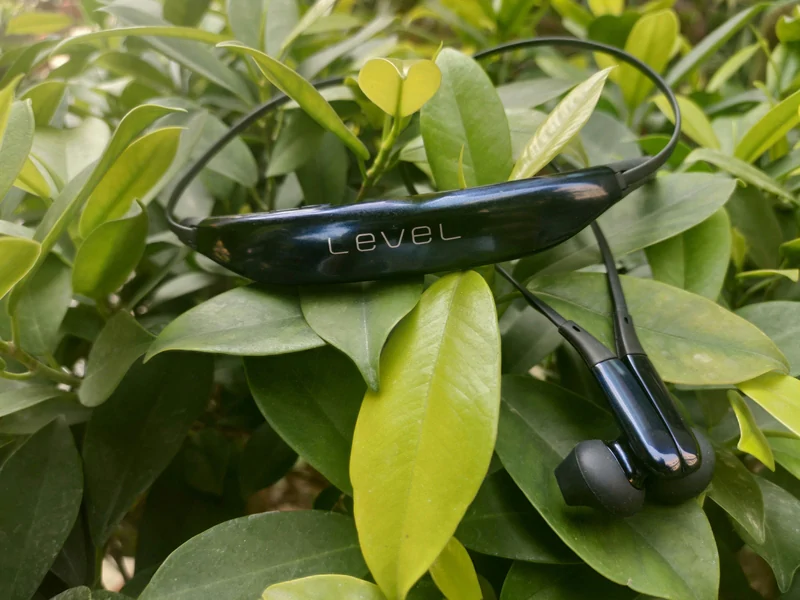
Redmi Note 7 Pro performance, cameras, and battery life
The Redmi Note 7 Pro is powered by the octa-core Qualcomm Snapdragon 675, the same processor that we last saw in the significantly pricier Vivo V15 Pro ₹ 26,819 (Review). We did not face any performance jitters and lags with regular tasks such as Web browsing, running multiple social media and productivity apps, and streaming videos. Even with around 10-12 apps running in the background, switching between them was smooth.
The Redmi Note 7 Pro also proved to be a capable performer when it comes to gaming. Casual games ran buttery smooth, and even demanding games such as PUBG Mobile and Asphalt 9: Legends played well. Both these games ran with high graphics and performance settings by default, but we did notice some frame drops and occasional stutters. Toning the graphics settings down to the medium preset took care of these issues and the experience was more enjoyable.
Even though the Redmi Note 7 Pro handles day-to-day usage with ease, it is plagued by a heating issue. An hour-long session of PUBG Mobile or Modern Combat 5 made the device significantly hot, especially in the area around the fingerprint sensor. The rise in temperature was quite drastic and we had to keep the device idle for some time after gaming to let it cool off. We hope that Xiaomi is able to resolve this issue through an OTA update in the near future.
Coming to synthetic benchmarks, the Redmi Note 7 Pro scored 178,570 in AnTuTu and 2,389 and 6,593 respectively in Geekbench's single-core and multi-core tests. Moving to the more graphics intensive tests, the Redmi Note 7 Pro put up a tally of 1,079 in 3DMark Slingshot Extreme OpenGL and returned 41fps and 7.8fps respectively in the GFXBench T-Rex and Car Chase tests.
The Redmi Note 7 Pro was fine when it came to phone calls. Call quality was good with loud and clear sound. The rear-mounted fingerprint sensor impressed us with its speed and accuracy. The face unlock feature was also quick, but it struggled a bit in dimly lit surroundings.
The Redmi Note 7 Pro's photography prowess is something Xiaomi made a big deal about at the launch event, going as far as comparing this phone to the iPhone XS Max ₹ 108,424 (Review). As for the hardware itself, the Redmi Note 7 Pro comes equipped with a 48-megapixel main camera using the Sony IMX586 sensor with an f/1.79 aperture and 1.6μm pixel size.
It is accompanied by a 5-megapixel depth sensor. As far as features go, the list includes AI Portrait mode, AI Studio Lighting, AI Dynamic Bokeh, slo-mo video recording, and 4K video capture. Up front is a 13-megapixel camera to take care of selfies. It supports features such as AI Portrait mode, AI Studio Lighting, and AI Beautification.
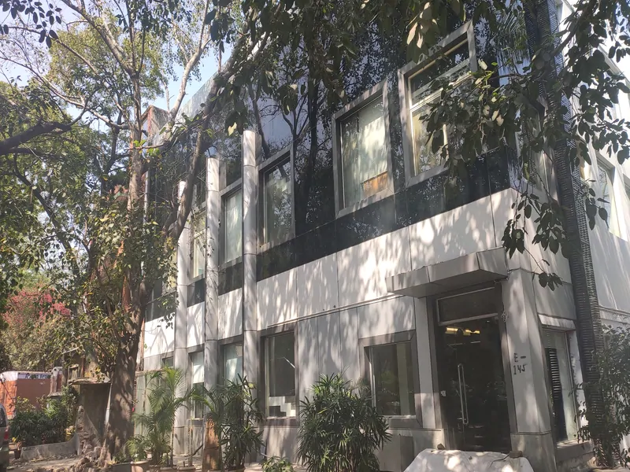
The Redmi Note 7 Pro definitely raises the bar for smartphone photography in its price bracket. It captures beautiful images with ample detail, high dynamic range, and good vibrancy. The device shines especially when it comes to close-up shots. Colours were punchy and gradients were reproduced nicely in our sample shots, while surface details such as grooves and ridges were also captured in great detail.
Colours sometimes turned out to be slightly oversaturated in order to enhance contrast, and backgrounds were occasionally underexposed as a result. Also, hues appeared to be slightly warmer than they are in reality. These are minor issues, and the photos captured by the Redmi Note 7 Pro are generally of superior quality compared to what similarly priced smartphones are capable of.
Photos are taken at a 12-megapixel resolution by default, with the Redmi Note 7 Pro using a technique called pixel binning to collect data from four adjacent pixels as a single larger pixel, which effectively brings in more light. You can capture 48-megapixel shots by manually enabling the 48-megapixel mode.
The 48-megapixel shots capture more detail than photos recorded at the default 12-megapixel resolution, but they appear slightly dimmer and also exhibit some softening. The 12-megapixel shots, aside from being much smaller in size, are sharper, more vibrant, and have more depth. Also, 48-megapixel shots captured in low light have more noise compared to those taken at the default resolution.
Verdict:
The Redmi Note 7 Pro has a lot working in its favour. With its eye-catching design, smooth performance, impressive cameras and long battery life, it has all the makings of a solid smartphone. Add to that a highly competitive price point, and Xiaomi has another champion on its hands.
That does not mean the Redmi Note 7 Pro is flawless. This smartphone heats up really quickly when gaming, MIUI serves ads, there are a few camera quirks, and the exterior is also a dust and smudge magnet.
The sub-Rs. 20,000 realm is hotly contested at the moment and there are several devices to challenge the Redmi Note 7 Pro. The Oppo K1 ₹ 16,990 (Review), for instance, offers an in-display fingerprint sensor and an AMOLED display. For a slightly higher price, the Samsung Galaxy A50 ₹ 19,990 (Review) brings a triple rear camera setup, Super AMOLED display, and in-display fingerprint sensor to the table, and is definitely worth considering.
The Samsung Galaxy M30 (Review) also adds a third ultra-wide camera for wide-angle shots. The Nokia 6.1 Plus ₹ 14,920 (Review) offers stock Android, smooth performance, and a beautiful design. The ZenFone Max Pro M2 ₹ 15,990 (Review) and the Realme U1 ₹ 10,999 (Review) are two other smartphones that are worth considering in this particular price segment.
All these smartphones are competitive, but the Redmi Note 7 Pro rises above them in terms of its visual appeal, cameras, processor, battery life, and of course its price. These are all key parameters that sway the opinions of smartphone buyers, and it isn't often that you can get them all in a single package. The Redmi Note 7 Pro is a formidable smartphone and emerges as yet another winner for Xiaomi.
Microsoft made its foray into the “personal computer” market back in 2012 with the launch of the original Surface — notwithstanding the tabletop computer with the same name that the company showcased at CES 2008. The first Surface was a Windows RT device designed to compete with Apple's iPad at the top end of the tablet market.
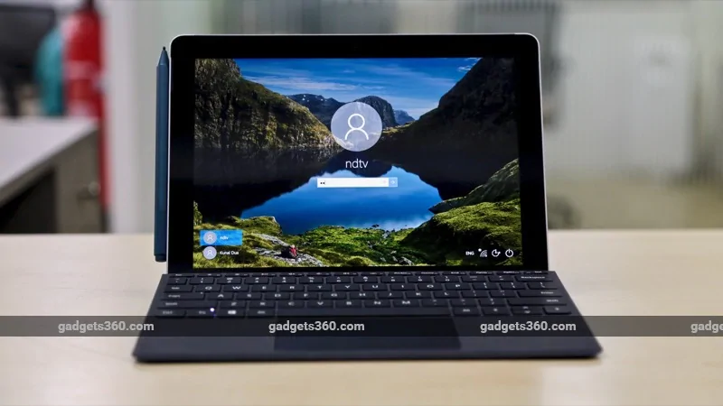
While the Windows RT experiment came to an end pretty quickly — the Surface 2 was the last Microsoft device to ship with the version of Windows optimised for ARM devices, as Microsoft switched to “regular” Windows even for its tablets — the Surface name has lived on, and indeed thrived.
The company has announced several Surface devices in recent years, and we've seen the line evolve from tablets and hybrid 2-in-1s to form factors as varied as the Surface Studio and the Surface Hub. What they've all had in common is the fact that they are premium devices designed to showcase the best of what Windows has to offer.
With the launch of the Surface Go, Microsoft aims to make the Surface experience available at a more accessible price point, with the entry-level model starting at Rs. 37,999 in India. A tablet with a price tag of nearly Rs. 40,000 sounds like an expensive proposition on paper, but does the flexibly of running Windows 10 enhance its value proposition? Should the Surface Go be your pick if all you need is a premium tablet? Let's answer all these questions and more in our Surface Go review.
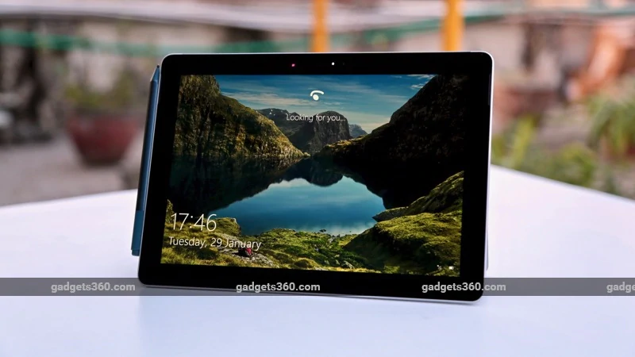
Microsoft Surface Go design and specifications
From the front, the Surface Go looks like a pretty standard tablet with fairly thick bezels on all sides of the screen. The bezels seem rather old-fashioned compared to present-day smartphones, and even the iPad Pro to a lesser extent.
With that said, the Surface Go doesn't look too dissimilar to the 2018 iPad, for example, though the iPad does have thinner bezels on the sides. The 2018 iPad, of course, also features a home button, while the front of the Surface Go is completely devoid of any buttons.
surface go price in india review 12 Surface Go review price in India
The back and sides of the device are a lot more interesting, and where the Surface Go starts to look and feel like a premium device. The top side (when the device is propped up with the kickstand) has a grey strip that houses the power and volume buttons towards the top. The strip extends on to the back, where you'll find a camera module and a noise cancelling microphone in the centre, giving the back a two-tone finish.
The right has a headphone jack, a USB Type-C port, and a proprietary port called Surface Connect that's used for charging and for connecting accessories like the Surface Dock. The bottom edge has the Cover connectors for you to snap on the Surface Go Signature Type Cover, which, of course, is sold separately.
surface go price in india review 3 Surface Go Review price in India
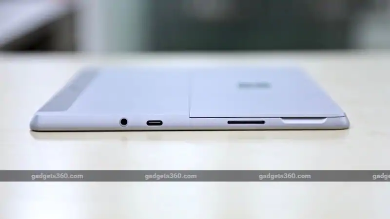
The most important design element of the Surface Go is the kickstand at the back. By default, the stand sits flush with the rest of the body, but it can be easily popped out to prop the tablet at various angles (up to 165 degrees). A microSD card slot sits behind the kickstand and is rather easy to miss.
The kickstand feels solid, and stays in place when you need it to, while still making it easy to change the angle as and when needed. Of course, the kickstand works great when you are working on a table, but initially we had reservations about how the experience would be while using it on the lap. As it turned out, our fears were unfounded, and using the Surface Go on our lap wasn't much different than, say, using the iPad Pro with its Smart Keyboard.
surface go price in india review 9 Surface Go review price in India
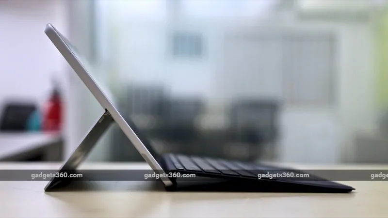
At 245 mm x 175 mm x 8.3 mm, is marginally bigger than the 2018 iPad, but at 10-inches — compared to 9.7-inch on the iPad — you also get a screen that's a little bit bigger. At 522g, it's also slightly heavier than Apple's tablet, but still portable enough to be lugged around without any problems, even when you throw in the extra weight of the Type Cover (more on that later).
The Surface Go is powered by the Intel Pentium Gold 4415Y processor with integrated Intel HD 615 graphics. The Pentium Gold line of processors sits between the Intel Celeron and Core i3 lines, so that should give you an idea of what to expect in terms of performance. Though Microsoft doesn't officially share the clock speed of the chip, a quick look at Intel's website shows that the 4415Y is a dual-core (four threads) chip with a base frequency of 1.6GHz.
In India, the Surface Go is available in two variants — one with 4GB of RAM and 64GB of eMMC storage priced at Rs. 37,999, and the one we had in for review, with 8GB of RAM and 128GB of SSD storage, priced at Rs. 47,999. You'll get 44GB and 97GB of usable space respectively on the two variants. Microsoft hasn't yet launched variants with LTE in India, so your connectivity options are limited to Bluetooth 4.1 and Wi-Fi 802.11ac.
As you might have noticed, you get a Type-C (USB 3.1 Gen 1) port on the Surface Go, but there are no full-sized USB ports, which means you will need to embrace dongles if you want to use your existing USB drives and other accessories. There's no USB Type-C to Type-A dongle in the box.
surface go price in india review 19 Surface Go review price in India
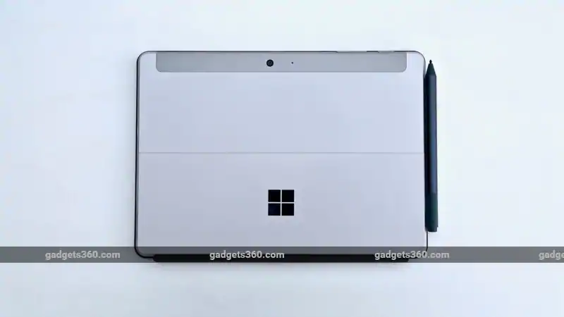
Microsoft Surface Go accessories
Like Apple with the iPad Pro, Microsoft is positioning the Surface Go as a laptop replacement, which makes the keyboard an important accessory. Just like the iPad, however, the keyboard is not bundled with the tablet and is sold as an optional extra.
You can of course use any Bluetooth keyboard with the Surface Go (just like with any other Windows device) but the Surface Go Signature Type Cover — as Microsoft calls it — does not need charging, and doubles up as a cover for the screen when not in use. It connects to the Surface Go via the connectors we mentioned earlier, and is pretty easy to snap on and off when you need.
The Signature Type Cover is available in Platinum, Burgundy, and Cobalt Blue colours and is made out of the premium Alcantara microfibre material seen on some other Surface devices as well. At Rs. 11,799, that's a pretty expensive keyboard, which makes us glad that it's also available in black at “only” Rs. 8,699, using less expensive fabric.
We got a black keyboard for testing from Microsoft, and while the Alcantara keyboards certainly feel more premium, the more affordable option still felt pretty good. Despite being fairly compact, typing on the Surface Go Signature Type Cover keyboard was a pretty decent experience. We found the keys to be well spaced out with decent travel for a keyboard of this thickness.
surface go price in india review 15 Surface Go review price in India
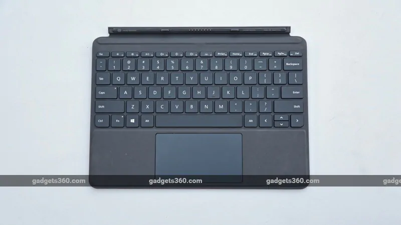
The keyboard layout is fairly standard, with a row of thin function keys at the top. The backlight is a welcome touch, and a reminder to the likes of Apple that it's possible to add this feature without compromising on portability at least, if not battery life. Microsoft has also managed to pack in a fairly decent-sized trackpad with the keyboard, and we have no issues to report in terms of its performance.
The Fn key can be used to alternate the top row of keys between standard function keys and special functions such as increasing/ decreasing the display's brightness, controlling media playback, and toggling the keyboard backlight. Print Screen, Home, End, Page Up, Page Down, and Delete are implemented as secondary actions for the function row keys.
Apart from the keyboard, the Surface Go supports other Surface accessories like the Surface Pen, and the experience is pretty similar to what we've documented elsewhere. In short, while Windows has better native handwriting recognition than, say, iOS, and the Pen works pretty well, we don't think it's an essential tool unless you are an artist or prefer taking notes the old-fashioned way.
The Surface Go has limited support for the Surface Dial, in that you can get it to work with the tablet, but it does not support on-screen interactions.
Microsoft Surface Go performance and battery life
A tablet is nothing but a giant screen with the internals to back it up, and it's safe to say that the Surface Go gets the basics right as far the display is concerned. The 10-inch display is arguably the highlight of the device, and it offers very good colour accuracy and viewing angles. It can get sufficiently bright, which makes it good to use in nearly all conditions.
The display has a resolution of 1800x1200 pixels, and out of the box, Windows 10 is set to 150 percent scaling. We changed this to 125 percent to fit more content on the screen and still found it to be more than usable, though your experience may vary.
surface go price in india review 22 Surface Go review price in India
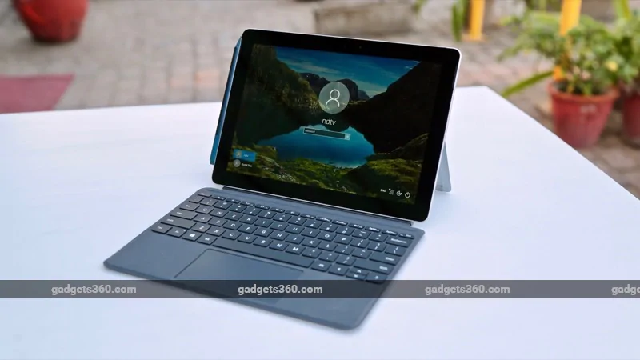
The Surface Go handled most basic tasks such as Web browsing, checking email, and watching YouTube videos without any problems, and you shouldn't expect anything less at this price. With that said, as we noted before, we got the more expensive variant in for testing, and the performance of the lower priced variant with just 4GB of RAM and slower eMMC storage will almost certainly be less smooth.
The Surface Go will run basic games, but don't expect this to become your portable gaming device. We tried playing Asphalt 8 on the tablet, and while it ran without any major problems and was certainly playable, the overall experience was rather choppy with dropped frames aplenty. Given our experience with this game and Surface Go's meagre 247 score in 3DMark's Time Spy test, we didn't bother installing any heavier games
Moving on to other benchmarks, we got a score of 32.59fps in Cinebench R15's OpenGL test, and a PCMark 10 score of 1,835, which is practically identical to what we got with the Smartron tbook flex and more than what the iBall Compbook Premio v2.0 scored. However, it's less than what the Rs. 35,990 Asus VivoBook 15 scored, though that machine has a much-slower, spinning hard drive and packs a display that's nowhere near as nice as the one on the Surface Go.
In Geekbench 4, the Surface Go recorded single- and multi-core scores of 1,966 and 3,756. That's rather underwhelming compared even to the 2018 iPad, which scored 3,445 and 5,837 respectively in the same tests, and well short of what the more expensive iPad Pros manage.
Using CrystalDiskMark, we recorded sequential read and write speeds of 1,200MBps and 88MBps respectively, while random read and write speeds with the queue depth set to 32 were 94MBps and 38MBps respectively.
The Surface Go has an 8-megapixel autofocus rear camera and a 5-megapixel front camera. No one expects their tablet to be their primary camera, but the ones on the Surface Go will do a decent job if the need arises. The highlight here of course is support for Windows Hello, Microsoft's face recognition technology that's built into Windows. Using Windows Hello to unlock our Surface Go was pretty smooth for the most part.
The Surface Go packs dual 2W stereo speakers with Dolby Audio Premium, and in our experience we found that while they can get fairly loud without sounding harsh, the resulting sound is still rather tinny.
surface go price in india review 7 Surface Go review price in India
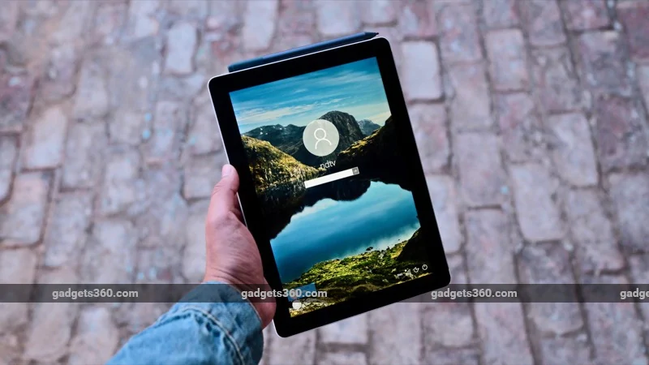
The Surface Go ships with Windows 10 Home in S mode, which means you can only install apps from the Windows Store. Of course, it's trivial to unlock full Windows 10 Home if you want, though this is an irreversible process. Perhaps more interestingly, we noted that the Surface Go has Windows 10's “tablet” mode disabled by default, which we found be a rather curious choice. Let us explain.
Most, if not all, Windows 10 tablets and 2-in-1s can detect their current state and offer an optimised user interface. In tablet mode, with no external keyboard attached, these devices present a user interface that's optimised for touch devices, with large target areas and apps that open in full screen mode by default. When a keyboard is attached, they can revert to the traditional Windows interface with the Start Menu and Desktop at the centre of all user interactions.
Out of the box, the Surface Go ships with tablet mode disabled, which means it shows the traditional Start Menu by default, even when there's no external keyboard attached. You're not prompted to toggle into tablet mode manually either, which is something we've noted with other devices including the Surface Book 2. Perhaps this was done to offer something familiar to users on first boot, but we found this to be a curious — and even sub-optimal — choice, as the tablet mode definitely offers a better experience when dealing with a touchscreen.
Other than that, the Surface Go offers pretty much what you would expect from a Windows device. This includes a true multi-tasking experience, compared to the likes of the iPad Pro. This means you can, for example, have a YouTube video playing in the background — newly launched YouTube Premium notwithstanding — even as you work on a Word document in full screen, something the iPad cannot do. Of course you also get full file system access access for external media, though the lack of a full-sized Type-A USB port might disappoint some people.
surface go price in india review 5 Surface Go review price in India
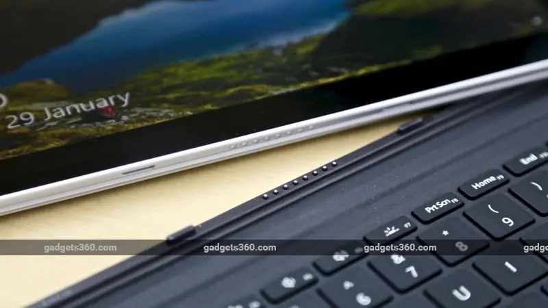
In terms of battery life, the Surface Go was a little underwhelming. While the tablet lasted an impressive three hours in the Battery Eater Pro benchmark and around 11 hours in our HD video loop battery loop test — exceeding Microsoft's own claim of 9 hours of continuous video playback — our real-world experience was rather different.
We struggled to get even four-and-a-half hours of usage from the Surface Go, even when we were doing nothing more than basic browsing, checking emails using Outlook, and watching an occasional YouTube video. For a device that's first and foremost a tablet, that's disappointing to say the least.
Microsoft ships a 65W charger with the Surface Go, which will top up the tablet pretty quickly through the Surface Connect port. You can also use the USB Type-C port for charging, though you will obviously need your own charger and cable.
Verdict:
The Microsoft Surface Go is a pretty interesting device that gives you a lot to like. The design is nice and premium, the display is excellent, and the performance is good enough for most everyday tasks. But who is it for?
If you are looking for an extremely light and portable Windows notebook, the Surface Go and Surface Go Signature Type Cover combination could serve you well. We recommend getting the higher-end variant that we reviewed and the black keyboard cover, a combination that will set you back by nearly Rs. 57,000. Sure, that kind of money could buy you a laptop that's more powerful, but nothing will come close in terms of the portability and finesse that Microsoft's solution will offer.
Yes, there are a bunch of Windows tablets that aim to do something similar at lower prices, but most of them end up making too many compromises, especially in terms of design and display quality. The only real problem with the Surface Go is its battery life, and that is truly disappointing for something that's otherwise designed to be used on the move. We also hope Microsoft launches the LTE option in India soon to make this machine a true road warrior, though that would obviously push the price even higher.
With that said, if you are someone who's looking for a device that's a tablet first and foremost, you would be better served by the 2018 iPad or the iPad Pros. While we absolutely love the fact that Windows offers true multitasking without any restrictions, the iOS ecosystem is better in terms of the quality of tablet-optimised apps.
MSI has earned a good name for itself in the high-end gaming laptop space. It was the Taiwanese component manufacturers, most notably MSI and Asus, who first popularised powerful gaming laptops. They used their knowledge of gaming and history with enthusiasts to realise that customers wanted laptops more than desktops but weren't always happy with sacrificing power for slimness.
Now, Dell, Acer, HP and Lenovo have gone all-in on the profitable gaming segment, and they're all very serious about grabbing market share. Faced with competition from well-known brands, MSI is returning the favour by going mainstream.
MSI's Prestige series still uses relatively high-end hardware, but the focus is on style. The company started down this path with the well-received GS65 Stealth Thin 8RF, its first ultra-portable gaming laptop. With the new PS63 Modern, MSI is hoping to attract buyers who don't like the blinged-out style of a gaming laptop but still want powerful components. Can this gaming-focused company bring a fresh perspective to the ultra-portable laptop segment? We're about to find out.
msi ps63 modern rear ndtv msi
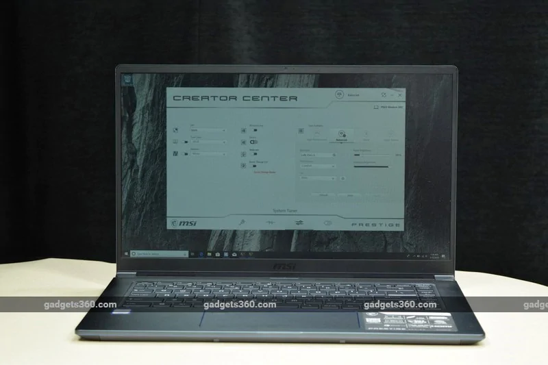
MSI PS63 Modern 8RC design
By the standards of MSI's gaming laptops, the PS63 Modern is downright demure. Gone are the red accents, aggressive lines, oversized vents, and gratuitous LEDs. This laptop has a simple low-key shape with slightly rounded corners and a tapered base. The entire body has a deep blue-gray metallic tint that MSI calls Carbon Grey.
There are very thin bevelled edges at the top and bottom, as well as the rim of the trackpad, which are a shiny purplish-blue colour. This is going to be a polarising design choice — it's certainly attention-grabbing, and it's the only thing that keeps the design from what we would consider minimalist. You can't call the PS63 Modern understated or subtle, but you can't call it boring either.
The lid is metal and has a matte texture, but it's unfortunately easy to smudge. MSI's dragon badge, typical of gaming hardware, seems a little out of place here even though it's just printed and not illuminated. Surprisingly, the only other visible branding is a very faint MSI logo below the screen.
There are two small hinges at the extreme ends of the PS63 Modern's body. They're stiff enough to keep the screen upright without wobbling, and we were still able to open and close the lid with one finger. There are large vents between the hinges but they're hidden nicely.
MSI highlights the 5.6mm thin screen borders and 86 percent screen-to-body ratio, and the PS63 Modern does live up to its name in that sense. There's still enough place above the screen for a webcam, which is great. The lid is stiff but flexes quite a bit, especially in the centre where the hinges don't support it.
The keyboard deck is metal with the same colour and texture as the lid, but also the same tendency to pick up smudges from your fingers and palms. This is nit-picking, but we were annoyed by the inconsistent sizing and capitalisation of the keycap label text.
msi ps63 modern topdown ndtv msi
Laptop keyboards are hard to get right, and MSI has done a very good job here. The keys are just the right balance of crisp and springy even though there isn't much key travel. You can choose between three levels for the white backlight. There's no numeric keypad, which a lot of other 15.6-inch laptops manage to fit in, but that isn't entirely a bad thing.
We're happy to see dedicated paging keys and an arrow cluster that isn't crammed into a single line. There are still a few layout quirks, such as a completely unnecessary extra ‘\' key to the right of the spacebar but no Fn key to the left. The Fn key row is also curiously underutilised with no media playback shortcuts and very few system-level toggles and controls.
The trackpad is surprisingly wide — MSI says it's 35 percent bigger than usual. The entire surface is a button and can physically be clicked. There's a fingerprint sensor near the upper left corner (but the considerable space between the corner of the trackpad and the sensor itself is a dead zone).
Unfortunately, this design introduces a few usability issues. The trackpad's surface is very slick and we found it difficult to move the cursor with fine accuracy. Our palms rested on the trackpad while typing, and palm rejection was occasionally a problem. We kept accidentally clicking the trackpad and this did sometimes make the cursor jump to the wrong place or make a context menu appear when we were trying to type. We should note that if you aren't a touch typist or if you tend to hover rather than rest your palms on the trackpad, you might not have the same experience that we did.
On the left side of this laptop we have the DC power inlet, an HDMI output, a USB 3.1 Gen1 Type-C port that supports DisplayPort video output, one USB 3.1 Gen1 Type-A port, and a 2.5mm headset socket. That Type-A port is very interesting because it supports Qualcomm's QuckCharge 3.0 standard — more on that later. The right side has another USB 3.1 Gen1 port, one USB 3.1 Gen2 port, and a microSD card slot. We would have liked a full-sized SD card slot and Ethernet, but this is still a very good amount of connectivity.
The MSI PS63 Modern weighs 1.6kg and is 15.9mm thick, making it very portable. You could easily carry this laptop around in a backpack or sling bag every day. Even the 90W charger is relatively small and light.
msi ps63 modern sides ndtv msi
MSI PS63 Modern 8RC specifications and software
Two variants of this laptop are available in India, the PS63 Modern 8RC, and the PS63 Modern 8M. The former features an Nvidia GeForce GTX 1050 (Max-Q) GPU and comes with a 90W mains adapter, while the latter makes do with Intel's integrated graphics and only needs a 65W charger. We're reviewing the more expensive PS63 Modern 8RC, which should be able to handle light gaming and some professional content creation tasks a bit better.
Both are identical in every other way, starting with a quad-core 8th Gen Intel Core i7-8565U processor running at a base speed of 1.8GHz and a boost speed of 4.6GHz. There's 16GB of RAM and a 512GB PCIe SSD. Considering that this is a slim laptop, we're happy that the spec sheet notes that both the RAM and SSD are modular and upgradeable. In fact, there's an additional SATA M.2 slot for a second SSD if you need one.
The 15.6-inch display is listed as “IPS-level” and is said to be able to reproduce “close to 100 percent” of the sRGB spectrum. There's an 82WHr battery rated for 16 hours of productivity on the go. You get Bluetooth 5, Wi-Fi 802.11ac, and a 720p webcam which can be disabled at the hardware level for security.
The PS63 Modern runs Windows 10 Home. There is some preinstalled software including a demo version of Norton Security which keeps on throwing up popups, and Norton Studio for managing multiple devices. Most of the software is MSI's own, and the company is not subtle about letting you know it. You'll be prompted by an MSI online registration tool, a colour calibration widget for the screen, a driver and app updater, Nahimic Audio control panel, a backup tool, and the main Creator Center utility (which also includes most of the smaller apps' functions).
Creator Center is the equivalent of MSI's Dragon Center for gaming laptops, minus the overclocking and RGB LED controls. Its main tab shows a toggle for ‘Creator Mode', which is described as an “auto tuning” function for specific photo, audio and video editing programs. It supports Adobe's Creative Cloud software and several tools from Magix and Corel.
What this means is you can override the Windows scheduler to set these apps' affinity to specific CPU threads and give them preferred access to RAM. There are also unexplained memory and GPU optimisation toggles. We would really not recommend that you mess with this level of tweaking unless you know exactly what you're doing and how it affects all other hardware and software.
Creator Center shows you an overview of your laptop's resource usage, lets you tweak the display colour mode and audio equaliser settings, enable or disable the webcam, and choose a power mode. You can choose to swap the Windows and Fn keyboard keys which are on opposite sides of the spacebar, or disable the Windows key altogether. You can also enable or disable the QuickCharge 3.0 USB port.
msi ps63 modern profile ndtv msi
MSI PS63 Modern 8RC performance and battery life
We were very happy with the PS63 Modern in the time that we spent with it. It's very portable but at no point did we feel that performance or comfort had been compromised. Of course there are even thinner and lighter laptops, but MSI has found a very good balance between portability and power. Other than the frustrating trackpad we had no trouble at all with multitasking in Windows, streaming video, and getting work done.
You don't get a touchscreen, which is a slight disappointment for such a premium laptop. On the other hand, the panel is non-reflective, and we were very happy with it. We didn't have to struggle to work comfortably under our overhead office lights. Windows 10 was set to 125 percent scaling but we took that down to 100 percent and had a lot more usable workspace. Videos and games look fine on this screen. Colours are slightly muted unless you pump the brightness up above 75 percent.
The side-firing stereo speakers on the bottom of this laptop are fairly loud and produce a surprisingly open and clear sound. It works very well for dialogue in movies, but when we started playing music we realised that there was no bass whatsoever and everything sounded tinny. The webcam is good enough for video chats but you'll need to be in a brightly lit room.
The MSI PS63 Modern breezed through all our benchmarks thanks to the Core i7 CPU and generous amount of RAM. We got 337 and 1,087 points respectively in the brand new Cinebench R20 benchmark's single-core and multi-core tests. POVRay ran its built-in render test in 3 minutes, 54 seconds. PCMark 10's Extended test gave us a score of 3,387. We compressed a 3.24GB folder of assorted files using 7-zip in 4 minutes, 6 seconds, and transcoded a 1.36GB AVI file to H.265 in 2 minutes, 2 seconds.
One minor annoyance with our review unit was that the 512GB SSD had been divided into two partitions of 286GB and 173GB, which we thought was unnecessarily restrictive. Nearly 17GB was reserved for system and BIOS recovery data. Still, the SSD performed quite well and gave us sequential read and write speeds of 1,737.7MBps and 1,446MBps respectively.
The Nvidia GeForce GTX 1050 GPU means that there is scope for gaming. MSI has gone with Nvidia's Max-Q option which is supposed to help keep heat and noise under control. We got 1,724 points in 3DMark's Time Spy test and 5,222 in the Fire Strike test. We then ran Unigine Valley at 1920x1080 using its Ultra preset and got 30.4fps on average.
We ran through a few in-game benchmarks as well. Rise of the Tomb Raider ran at a respectable average of 43.17fps when set to the native 1920x1080 resolution using the High preset. Far Cry 5 gave us an average of 33fps using the same settings, but there was a little stuttering and inconsistency. All of this shows that there is potential for gaming at reasonably high quality settings.
MSI boasts of a ‘Professional Quiet Mark' certification so you aren't distracted while working. We found that we could only hear the PS63 Modern's fans when running heavy games, but when we did hear them the sound was scratchy and not subtle. The entire keyboard got a bit hot after about an hour of gaming too. With everyday use, we found that the base got a bit too warm for us to keep this laptop on our lap for long.
The PS63 Modern is supposed to deliver 16 hours of productivity, but we found that claim to be optimistic. We ran for about 12 hours of basic Web surfing and document work with a bit of HD video streaming.
That brings us to this laptop's most interesting feature — its QuickCharge 3.0 USB port. When running on mains power or when the laptop's battery level is over 30 percent, you can plug any QuickCharge 3.0 compatible smartphone or other device into the USB 3.1 Type-A port on the left, and it will be charged quickly. When this happens, that port will not support data transfers.
You can turn QuickCharge mode on or off using the Creator Center if needed, but it will come on by default when the laptop's battery can support it. A white LED next to the port will light up to tell you that this mode is active. Quick charging is available even when the laptop is closed and in standby. We tried it and it worked as expected.
msi ps63 modern reardown ndtv msi
Verdict:
It's really hard to find a laptop that strikes the perfect balance between features and portability. MSI has come very close to that with the PS63 Modern. This is a company that knows what serious PC users want, and design hasn't come in the way of usability. The screen and keyboard are very good, battery life is strong, and overall construction quality is satisfying.
Looks are subjective but we like the direction that MSI has gone in. The QuickCharge USB port could really come in handy for road warriors like us, and at just 1.6kg we wouldn't mind carrying this laptop around every day.
The only real issue we had was the trackpad. We don't find the regular-sized trackpads on today's laptops restrictive so we can't really see what MSI was going for with this super-sized one. Hopefully firmware updates will fix the accidental taps and sensitivity.
It might take a leap of faith for laptop buyers to spend Rs. 1,29,990 on a laptop from a brand that isn't as well known as Dell, HP, Lenovo, or Acer. We think it's worth considering if you're serious about portability and productivity. It's available online, and MSI does have retail stores in a few big Indian cities, so you can try it out for yourself. If you like the style and don't see yourself playing any games, the PS63 Modern 8M without the GeForce GTX 1050 GPU is priced at Rs. 99,990 in India.